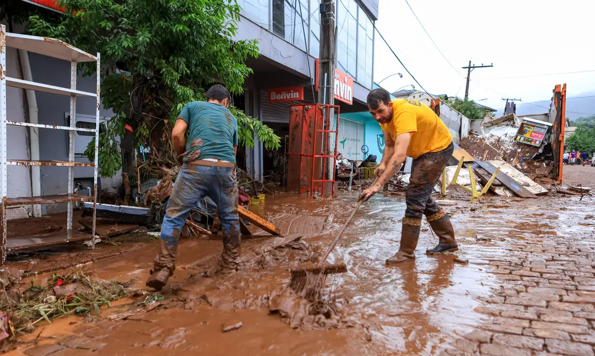
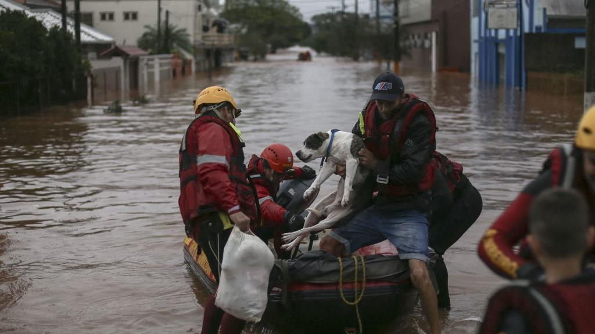
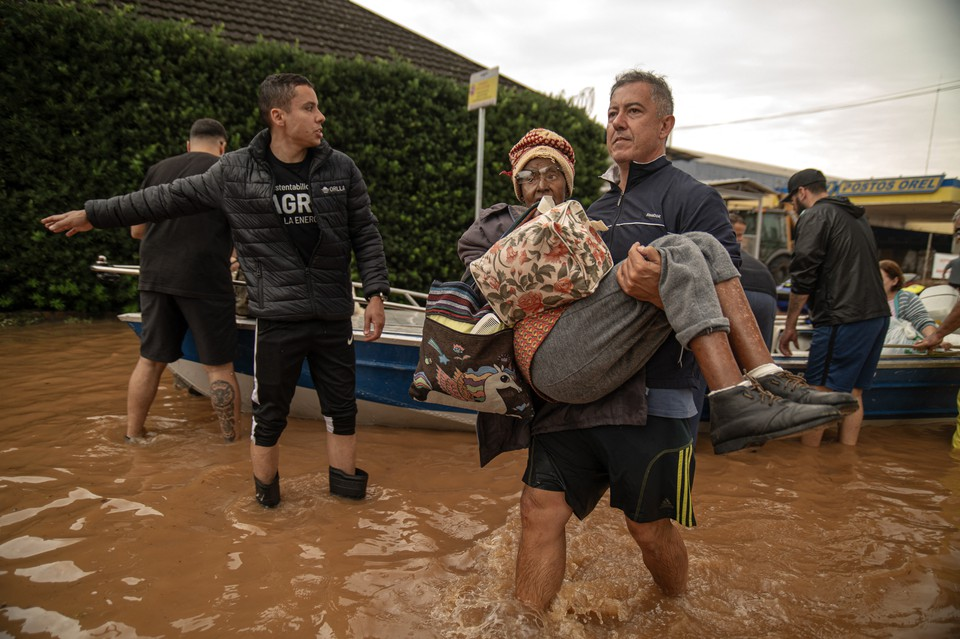

Terceiro Artigo da Declaração dos Direito Humanos
Artigo 3: Todo ser humano tem direito á vida, liberdade e à segurança pessoal.
Este direito está sendo garantido pelo Estado?
Vítimas registradas até agora 'são apenas a ponta do iceberg' da tragédia no RS, diz pesquisador da Fiocruz. Especialista em saúde pública e ciências ambientais, o pesquisador da Fundação Oswaldo Cruz (Fiocruz) Carlos Machado dedicou seus últimos anos ao estudo da preparação e resposta a desastres no Brasil.
Ilustrações

Fonte:https://agenciabrasil.ebc.com.br/geral/noticia/2024-05/mortes-no-rio-grande-do-sul-por-causa-das-chuvas-ja-chegam-39

Fonte:https://diariodonordeste.verdesmares.com.br/ultima-hora/pais/numero-de-mortos-em-chuvas-no-rs-sobe-para-39-aponta-novo-boletim-da-defesa-civil-1.3508218

Fonte:https://www.diariodepernambuco.com.br/noticia/brasil/2024/05/chuvas-no-rs-mais-de-10-mil-pessoas-foram-resgatadas.html
Como podemos ver, o governo se provou ineficiente em garantir esse direito a população depois desse "acidente". Mas afinal, foi realmente um acidente?
Negligência ou negacionismo? Governo gaúcho ignorou os alertas
Fonte:https://www.youtube.com/watch?app=desktop&v=cvLpQxAZdSg
Desastres climáticos são o novo normal, mas o poder público no Brasil em geral ignora os alertas dos meteorologistas.
Esta tragédia no Rio Grande do Sul já estava prevista há meses. Era consenso entre os meteorologistas que em 2023 teríamos o retorno do fenômeno climático El Niño, com grande probabilidade de chuvas fortes no sul do Brasil. Pouco foi feito para preparar os gaúchos para o que vinha.